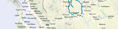
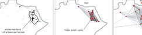
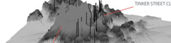
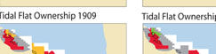

This website is no longer updated and has been replaced with a static copy. The Spatial History Project was active at Stanford University from 2007-2022, engaging in dozens of collaborative projects led by faculty, staff, graduate students, post-docs, visiting scholars and others at Stanford and beyond. More than 150 undergraduate students from more than a dozen disciplines contributed to these projects. In addition to a robust intellectual exchange built through these partnerships, research outputs included major monographs, edited volumes, journal articles, museum exhibitions, digital articles, robust websites, and dozens of lightweight interactive visualizations, mostly developed with Adobe Flash (now defunct). While most of those publications live on in other forms, the content exclusive to this website is preserved in good faith through this static version of the site. Flash-based content is partially available in emulated form using the Ruffle emulator.
Gallery (in rough chronological order)
Visualization of historical data in time and space illuminates patterns of movement and transformation in the past. We are experimenting with visualization as a tool to develop new arguments (and new questions) about historical processes and understandings of major historical events. The following thumbnails represent our complete collection of visualizations and publications (indicated with paper symbol icons) produced in the Spatial History Lab, with the newest ones on top.
Some of the visualizations below are finished presentations of the material; others are working drafts that we are using for research purposes but which are already useful for indicating broad trends and potential connections. Published articles, many of them student-led, explore the value of integrating narrative and visual forms of presentation. We invite you to explore the collection and offer your own perspectives about what they do or do not reveal.
Some of the visualizations below are finished presentations of the material; others are working drafts that we are using for research purposes but which are already useful for indicating broad trends and potential connections. Published articles, many of them student-led, explore the value of integrating narrative and visual forms of presentation. We invite you to explore the collection and offer your own perspectives about what they do or do not reveal.
Conservation Histories of California
Historical Ecology of Upper San Francisquito Creek

Landscape Change in Southern Brazil, from 1953 to the Present Day

Salmon Flu Transmission in Salmon Aquaculture
Mapping Mobility in the Budapest Ghetto
Mapping the Law: The Evolution of Slaughterhouse Space, 1852-1870
Fire Vulnerability in the Oakland Hills: Linking Emergency and Policy Reponses to the 1991 Tunnel Fire
Vulnerability in Construction: An Analysis of Home Developments After the Tunnel Fire
A History of Conservation Land Acquisition in California
The Africans of the Slave Ships Cezar and Brilhante, 1838-1865
Conservation for the land or for the species?
Animal City
A Decade of Fire in Western Australia
Chinese Canadian Immigrant Pipeline, 1912-1923
Chinese Canadian Immigrant Flows, 1912-1923
Reconstructing Conservation History: A link between ecology and history
Arrests of Italian Jews, 1943-1945
The Evolution of the SS Concentration Camp System, 1933-1945
Speculative Spaces: Land Speculation and Social Formation in Two California Counties
The Plays of França Júnior
Cigarette Citadels Bricolage
Vulnerability in Production: Road and Housing Networks
Social Unrest Surrounding Chilean Aquaculture, 2000-2010
Vulnerability in Production: A case study of the Rockridge neighborhood in Oakland, California
Water Vulnerability in the Oakland Hills: Oakland Firestorm, 1991
The Demic Atlas Project: A Non-State-Based Approach to Mapping Global Economic and Social Development
Transcontinental Railroad Development, 1879-1893

Extent of Digitized Rail
Machado de Assis: Memórias Póstumas
A Data Model for Spatial History
Colorado Railroad Accidents, July 1884 - June 1885
Neoliberalism, Civic Participation and the Salmon Industry in Southern Chile
When the Loss of a Finger is Considered a Minor Injury
Building the New Order: 1938-1945
Chasing an End to Perpetual Deforestation
Land Speculation in Fresno County: 1860-1891
From Salt Ponds to Refuge in San Francisco Bay
Prostitution in Philadelphia: Arrests 1912-1918
Union Pacific Shipping from Nebraska: East/West
Per Capita Income in the United States: 1880-1910
Population Density in the United States from 1790 to 2000
Union Pacific Shipping from Nebraska: Forwarded/Received
Exports from Colorado by Station in 1885
Trail of Blood
Distributions of Occupations, 1870
The Central Pacific and Transcontinental Eleven Step:
How to Run a Transcontinental Railroad
How to Run a Transcontinental Railroad

The Expansion of the Western Railroad
The Slave Market in Rio de Janeiro: Movement, Context, and Social Experience
What is Spatial History?
Cattle Production in the American West, 1867-1935
The Rise in the American Railway Union, 1893-1894
Yellow Fever Epidemic of 1850: Scale, Time, and Space
Railroad Repeats: The Alfred A. Hart Photo Project
Patterns of Change in Railroad Company Board Members, 1872-1894
Seeing Space in Terms of Track Length and Cost of Shipping
Rio de Janeiro Historical Address Locator
Tracing Railroad Directors, 1872-1894
Botanizing California
Western Railroads and Eastern Capital: Regional Networks on Railroad Boards of Directors, 1872-1894
The Struggle for Ownership of the San Francisco Bay Area 1769-1972
Lawyers in Rio de Janeiro: Movement in the City Center, 1860-1889
Backend Visualizations
Critical Habitat
Visualizing Sea Level Rise and Early Bay Habitation
Bay Area Conservation and Development
California Railroad Commission,
Station Construction Data, 1850-1900
Station Construction Data, 1850-1900
Rising seas flood a river valley and create San Francisco Bay
Visualizing Sea Level Rise and Early Bay Habitation, 6000 B.P. to Present: The Emeryville Shellmound
Tenement Housing in Rio de Janeiro, 1870s-1880s

The Artisan Heartland and Tinker

Property Values and Tinker Locations (Rio, c.1870)
Jasper Ridge Bay Checkerspot Butterfly Populations, 1960-1998
Extinctions of Bay Checkerspot Butterfly Populations, 1960-2008

San Mateo County Bay Ownership 1877-1927
Botanizing California, 1840-2008

Examples of Digitizing Rail from Historic USGS Quads
A Spatial Approach to California Botanists
CESTA | Spatial History Project
Wallenberg Hall, 450 Serra Mall
Mail: Bldg 160, Rm 228 - In Person: Fourth Floor
Stanford, CA 94305-2055

Mail: Bldg 160, Rm 228 - In Person: Fourth Floor
Stanford, CA 94305-2055
©copy;2022 The Spatial History Project All Rights Reserved
The Spatial History Project at Stanford University, a part of the Center for Spatial and Textual Analysis, was made possible by the generous funding of the Vice Provost for Undergraduate Education (VPUE), DoResearch, The Andrew W. Mellon Foundation, and The Wallenberg Foundation Media Places Initiative.
v3